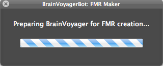

BrainVoyagerBot's FMR Maker automatically generates BrainVoyager .fmr files for each functional run in a subject directory (multiple subjects can be processed at a time).
Click Select Folder and choose a folder to process. Currently, BrainVoyagerBot only allows one single folder to be selected, and the folder must adhere to one of the following directory structures:
Currently, BrainVoyagerBot can only process EPI/DICOM images. Folders containing the DICOM files must have "EPI" in the directory name. After selecting a folder, click Start. BrainVoyagerBot's processing panel will appear as shown below:
If BrainVoyager was not already open, it will be launched automatically. Since BrainVoyagerBot cannot communicate with BrainVoyager until the user Accepts the Welcome dialog, a Finder message will appear asking the user to click Accept in BrainVoyager. BrainVoyagerBot will then wait until the Welcome pane is no longer open before continuing. Once the Welcome pane is closed, or if BrainVoyager was already open when "Start" was clicked, FMR creation will begin and the processing panel will show the progress:
When BrainVoyagerBot finishes creating the FMR files,
The FMR Maker will also create a folder prefixed with "_BV" inside each subject's main directory, and all FMR files created for that subject will be stored in the _BV folder. This conforms to the Tarrlab's folder structure and naming conventions; Future versions of BrainVoyagerBot will include preferences for whether to create a new folder in each subject's directory, and if so, what it should be named.